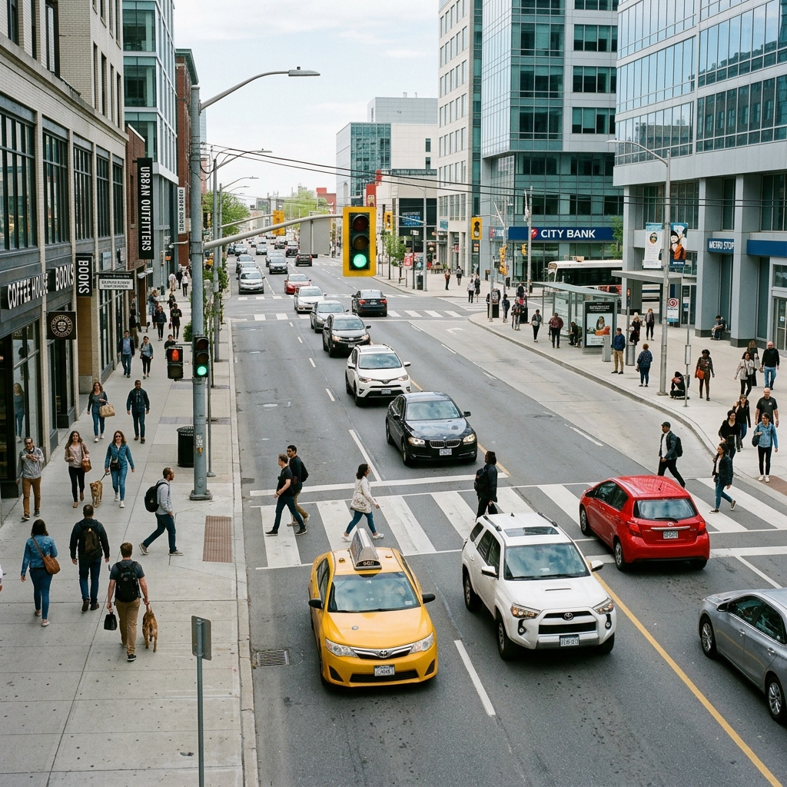
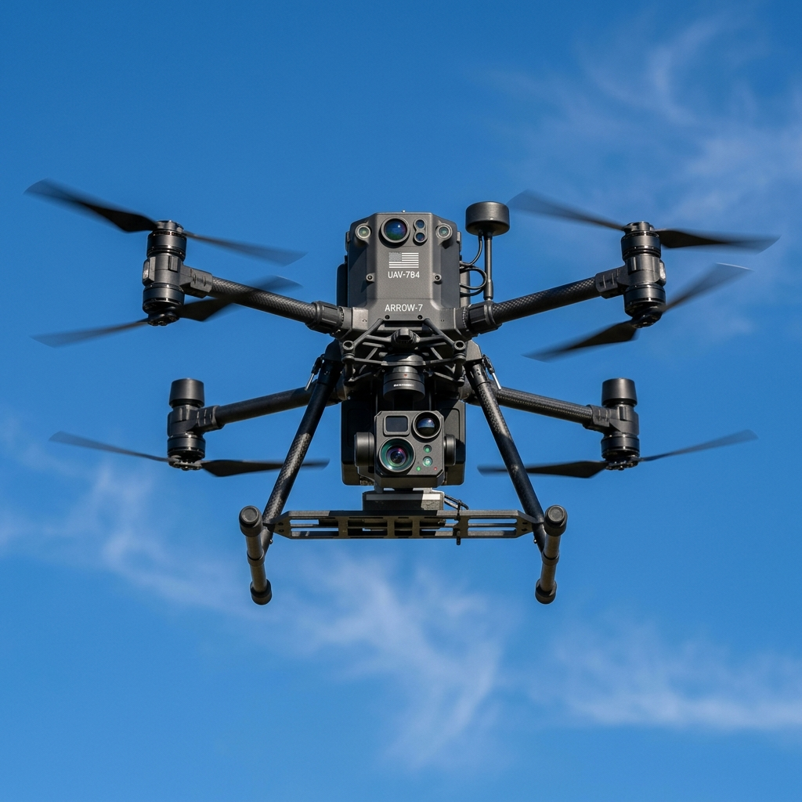
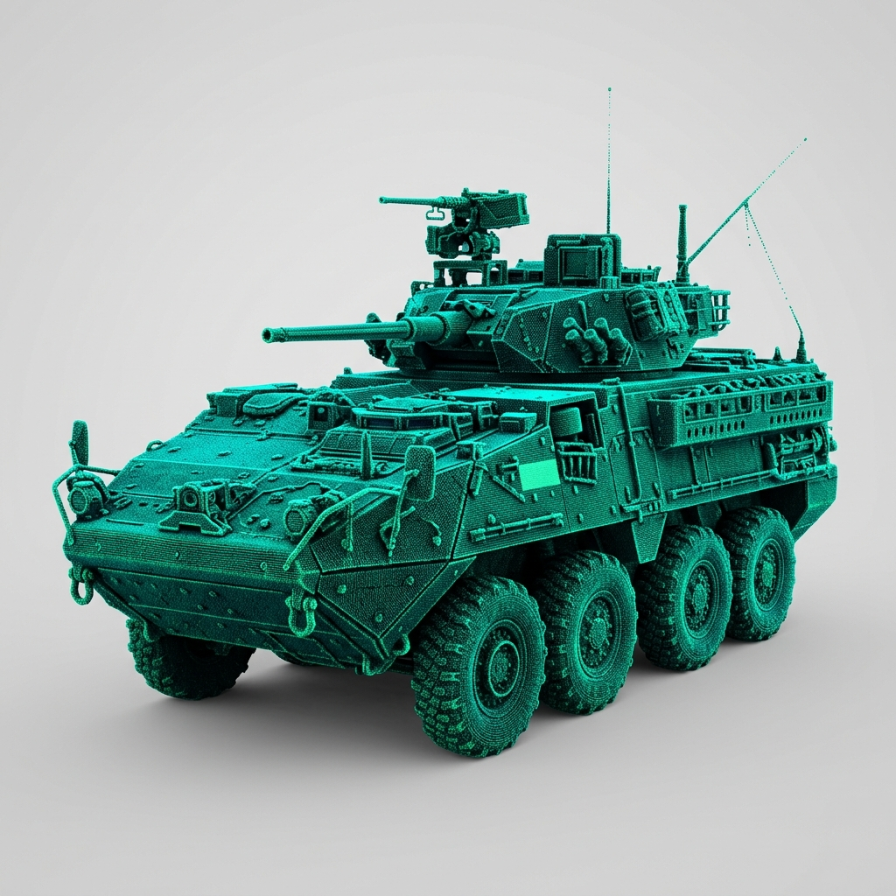

How machines learn to perceive, interpret, and act upon the rich visual data structure of our physical world.
Humans receive over 80% of all sensory information through their eyes. Vision drives our actions in real-time.
Avoiding obstacles and walking through complex pathways.
Identifying faces, symbols, read texts, and tools.
Manipulating objects with hand-eye coordination.
Evaluating speeds, dangers, and environmental states.
"What if machines could do the same?"
Computer Vision is the subfield of AI enabling computers to extract meaningful details from digital images, videos, and 3D sensory inputs.
An imaging sensor (RGB camera, LiDAR, Depth lens) collects light waves or distance photons, transforming raw electromagnetic radiation into raw voltage inputs.
Color light waves in Red, Green, and Blue spectrums.
Operates identically to the human eye. Captures textures, fine colors, text, and details. Highly reliant on ambient lighting; cannot parse depth directly.
Reading sensor...
To a computer, an image is a large multi-dimensional grid of numbers. An RGB color image represents three overlay layers (channels): Red, Green, and Blue.

0 represents complete blackness (no light photon), while 255 represents pure white saturation.
Predicting a single category (class label) representing the primary subject of an input image. Input: Image pixels ➔ Output: Predicted Category (e.g. UAV vs Ground Vehicle).

Applications: Automated surveillance monitoring, sorting sensory streams, drone reconnaissance sorting.
Locates multiple distinct items within a scene, generating coordinate bounding boxes and confidence class scores for each.
Crucial for autonomous navigation, tracking traffic flows, smart surveillance systems, and tactical mapping.
Pixel-level analysis. Instead of boxing an object roughly, segmentation classifies every single pixel in an image to extract precise contours.
Returns a global label for the entire image (e.g., 'Street Scene'). Identifies what is present but offers zero location details.
Adding the fourth dimension: Time. Video understanding models process frame sequences to interpret motion vectors and activities.
A static image of a soccer player tells us their pose, but a sequence of frames determines action velocity (e.g., kicking, running, jumping).
Object detection is done on single frames. Object Tracking associates bounding boxes across frames to maintain unique IDs for targets.
If Object Detection locates a car in Frame 1 and Frame 2, tracking logic determines they are the same car. It builds histories to predict speeds and future crash trajectories.
We live in a three-dimensional world, but 2D cameras project that world onto flat pixel arrays. 3D Perception bridges this gap by reconstructing depth, coordinates, and geometric boundaries from visual data.
Estimating distance metrics per pixel using sensors or stereo offset arrays.
Constructing spatial equations, surface slopes, orientation, and heights.
Simultaneously tracking camera position and modeling surrounding structures.
Raw spatial coordinates captured by time-of-flight laser reflections. Highly accurate geometry of terrain, buildings, and ground targets. Excellent for drone obstacle avoidance and landing zone evaluation.

Unmanned ground platforms and convoy logistics combine multi-spectral cameras, LiDAR, and path planning into safety-critical off-road navigation engines.
Consolidates inputs from multiple sources (RGB cams, LiDAR points, Radar echoes) to form a unified, noise-resistant spatial scene coordinate map.
Unmanned Aerial Vehicles (UAVs) leverage high-speed computer vision at the edge to navigate contested environments, locate landing zones, and track ground elements.
Using Visual Inertial Odometry (VIO), tactical drones build real-time local 3D maps to navigate safely in heavily contested zones where GPS telemetry is jammed.
Edge neural networks execute frame-by-frame persistent object association, keeping lock on ground vehicles or assets through severe physical occlusions.
Active plane-fitting and terrain roughness algorithms evaluate local topology via camera grids to identify secure landing zones for drop-offs.
Drones and tactical ground hardware cannot stream video feeds to the cloud. They must process vision models locally under extreme power limits.
Size, Weight, Power, and Cost. Neural processors must run on tiny boards using less than 10 Watts of battery power.
Converting floating-point weights (FP32) into 8-bit integers. Reduces memory footprints by 4x and power consumption by 5x+.
Deactivating unused neural connections. Speeds up latency to under 5ms, enabling reactive high-speed obstacle avoidance.
Foundation vision models can segment any object in zero-shot prompts and write textual descriptions about complex visuals.
Meta's Segment Anything Model (SAM) extracts precise pixel contours of any item in an image without ever being trained on that specific object class before.
Models like Gemini 1.5 read images alongside text. You can feed them a chart and ask: "Calculate the percentage increase of sales from 2024 to 2025."
Sudden glare, deep shadows, or dark night-time feeds change pixel values entirely. Models trained on sunny days frequently fail when facing blinding lens reflections.
Unlike human brains, computer algorithms do not possess inherent common sense. The visual world is highly cluttered and variable.
An object rotated outputs totally different pixel shapes.
When target colors match background environments.
Non-rigid bodies stretch and bend, breaking templates.
Objects appearing close-up occupy massive pixel matrices.
Research is moving from static 2D labeling to dynamic visual reasoners that build rich world models.
Training models to predict what pixels will appear next in a video, creating models that understand physics constraints implicitly.
Connecting computer vision engines directly to physical robotic actuators (e.g. humanoid robots navigating human homes).
Synthesizing entire 3D spatial environments in real-time from single-frame RGB camera feeds using neural radiance techniques.
Machines perceive light waves via pixel matrices and sensor arrays, converting raw values to math.
Perception moves from simple classification to detailed bounding boxes and precise pixel segmentation maps.
3D perception reconstructs spatial depths, geometry coordinates, and point clouds of our world.
Modern AI models are extremely powerful but still suffer limitations under noise, weather, and occlusions.